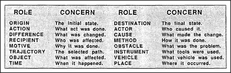

Why are sentences so easy to understand? How do we compress our ideas into strings of words and, later, get them out again? Typically, an English sentence is built around a verb that represents some sort of act, event, or change:
Jack drove from Boston to New York on the turnpike with Mary.
As soon as you hear such a thing, parts of your mind become engaged with these sorts of concerns related to driving:
These concerns and roles seem so important that every language has developed special word-forms or grammatical constructions for them. How do we know who drove the car? We know that it's Jack — because the Actor comes before the verb. How do we know a car was involved? Because that is the default Vehicle for drive. When did all this happen? In the past — because the verb drive has the form dr-o-ve. Where did the journey start and end? We know that those places are Boston and New York, respectively, because in English the prepositions from and to precede the Origin and Destination. But we often use the same prepositions for different kinds of concerns. In the sentence about driving, from and to refer to places in space. But in the sentence below they refer to intervals of time:
He changed the liquid from water to wine.
The liquid has changed its composition from what it was at some previous time. In English we use prepositions like from, to, and at both for places in space and for moments in time. This is not an accident, since representing both space and time in similar ways lets us apply the selfsame reasoning skills to both of them. Thus, many of our language-grammar rules embody or reflect some systematic correspondences — and these are among our most powerful ways to think. Many other language-forms have evolved similarly to make it easy for us to formulate, and communicate, our most significant concerns. The next few sections discuss how the pronomes we mentioned earlier could be involved in processes we use to make both verbal and nonverbal chains of reasoning.